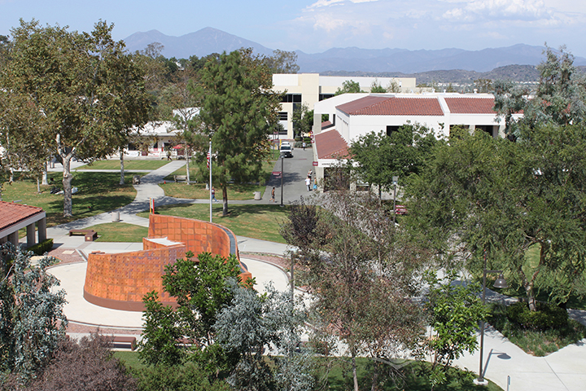
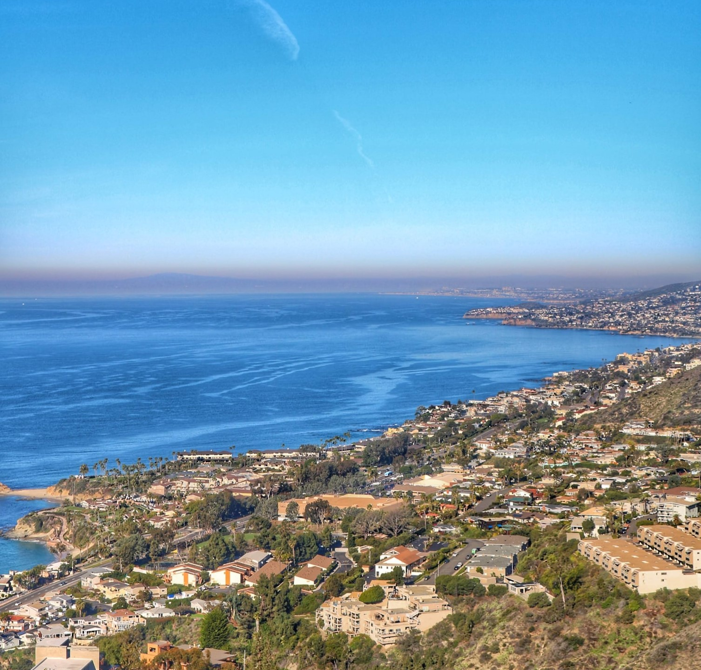
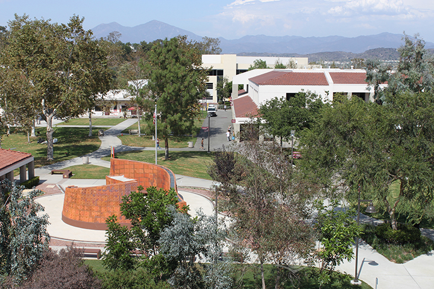
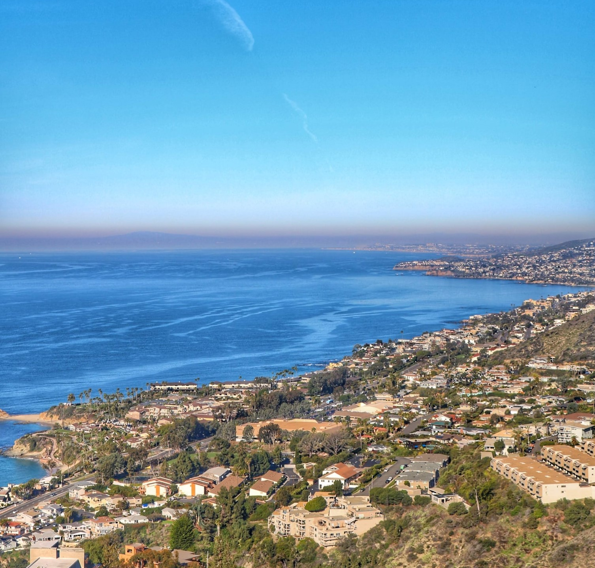

Price Calculator
Quick Facts
- Cafeteria
- McKinney Theater
- Library
- Free WiFi
- Smartboards
- Tennis courts
- Liberal Arts
- Health Sciences
- Business
- Psychology
- Environmental Science
- Los Angeles Int. Airport (LAX)
- 91 KM
- Spring 23°C
- Summer 26°C
- Fall 22°C
- Winter 20°C
- Approximately 27,000 student, including 14,000 degree-seeking undergraduates
- Vacation English
- General English
- Intensive English
- Academic English
- TOEFL Preparation
- High School Completion
- Concurrent Enrollment
- Bus: OCTA stop on campus
- Light rail: Metrolink line, 1 mile from campus
- Laguna Beach - 11 Miles
- Disneyland - 26 Miles
- Downtown Los Angeles - 52 Miles
I learned that pronunciation is really important
Saddleback College

 



Overview
Enjoy the Great Weather and Surroundings of Orange County
With 42 miles of world-famous beaches, legendary theme parks and enough shopping destinations to satisfy even the most dedicated shopper, it's no wonder that visiting Orange County is the ultimate Southern California experience. "The OC", as local residents call it, blends a casual, active lifestyle with laid-back sophistication. This unique lifestyle was integral to the development and culture of professional surfing, and the perfect weather continues to bring millions of visitors every year.
Safe and Friendly Community
The beautifully landscaped campus of Saddleback College is set on a hilltop surrounded by the gorgeous neighborhoods and shopping districts of Mission Viejo. Known as one of California's safest cities, Mission Viejo provides comfortable surroundings near some of Southern California's greatest attractions.
Orange County's Choice for Education
Saddleback College has been the first choice for higher education in South Orange County since 1968. Saddleback College offers more than 190 different degrees and certificates, giving students an excellent foundation to transfer to UC Irvine or other University of California or California State University schools.
Campus Profile
Located in safe and sunny Orange County, Saddleback College has offered a wide range of programs since 1968 and currently enrolls more than 27,000 students. Many students go on to four-year degree programs at nearby California State University and University of California campuses.
Campus Facilities
-
Learning Resouce Center
Housing computer stations, language lab, and campus library. -
McKinney Theater
Performing arts stage, with seating for 400, offering a variety of live entertainment events to students and the public. -
Student Services Center
Housing a student lounge and cafeteria providing a full range of food services. -
Athletic Facilities
Including tennis courts, golf driving range, gymnasium, baseball field and swimming pool. -
KSBR Radio Station
A commercial-free contemporary jazz and community information station serving Orange County. KSBR has won multiple awards and trains students enrolled in Saddleback’s Cinema/TV/Radio program.
Housing
Homestay
A homestay is a great way to experience American culture while improving your English ability! All FLS centers offer homestay accommodation with American families individually selected by FLS. Learn about American daily life, practice English on a regular basis and participate in many aspects of American culture that visitors often don't get to see. (Twin and Single options available).
Area Profile
The Saddleback ExperienceWith great weather, access to amazing beaches and a picturesque location between Los Angeles and San Diego, Mission Viejo offers an unbeatable quality of life with easy freeway access to classic California attractions like Sea World and Disneyland!
- Visit Disneyland Resort including the original Disneyland theme park including Galaxy's Edge, and the expanded California Adventure park, featuring Cars Land and Ariel’s Undersea Adventure.
- Relax on the sandy shores of Laguna Beach, considered one of the most beautiful beaches in California, and visit the many unique art galleries and cafes.
- Spend a fun-filled day at Sea World and see Shamu, sea lions and otters in action and enjoy rides like Manta and Wild Arctic.
- Enjoy the best of shopping, entertainment and dining at the huge Irvine Spectrum Center, offering over 130 specialty stores and restaurants.
- Take a surfing lesson on the shores of Huntington Beach, Surf City USA, the home of the annual US Open of Surf.
Recently named the safest city in the United States, Mission Viejo is an affluent suburban community of nearly 100,000. The center of the city contains a large man-made lake and beautiful tree-lined streets overlooked by the Saddleback mountain range. Mission Viejo offers an ideal climate with a temperature range of 11-23 degrees Celsius year-round. Summers are sunny, warm and dry. Fall and winter bring occasional rain showers, with snow in the local mountains. Due to close proximity to the ocean, nighttime and morning clouds are common.
Programs Offered
Academic Programs- Vacation English
- General English
- Intensive English
- Academic English
- TOEFL Preparation
- High School Completion
- Concurrent Enrollment
FLS offers ESL students a wonderful way to practice their new English skills while immersing themselves in American society by volunteering at local charities and community service centers. Join other FLS students as they perfect their conversational English while helping others! Here are some of the oportunities you will enjoy at FLS Saddleback College:
- Mission Viejo Library
- G.I. Joe Search and Rescue
- Irvine Senior Services
- Boys & Girls Club of Laguna Beach
FLS offers ESL students memorable and educational tour experiences, and opportunities to visit the best attractions of the United States. Students will have many opportunities to take part in excursions with the full supervision of our trained FLS staff.
Activities Include:- Disneyland
- Six Flags Magic Mountain
- Soak City
- Knott's Berry Farm
- San Diego